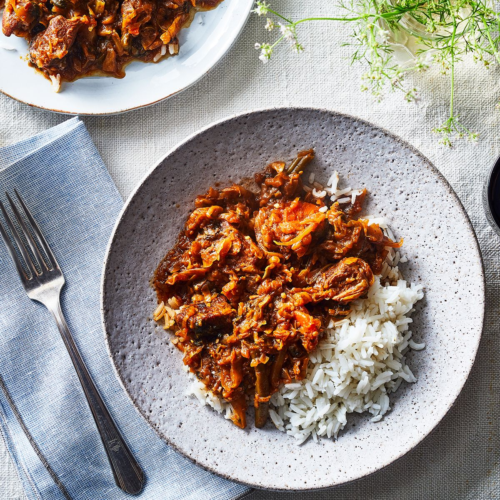
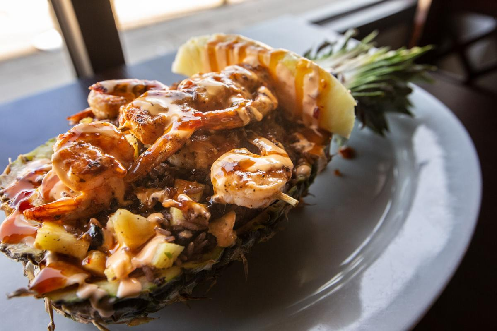

Lunch |
|---|
|
Boy oh Boy when the clock strikes 12. It does not matter where you are in the world. It is universal standard that the mid-day brings forth the mid-day meal. In my carribean house hold we go by "In rice we trust". So rice and beans are a lunch staple and will be accompanied by various meats. I normally have a huge preference for salted and seafood. However, granny will often bring the heat and surprise us. First rice dish is simply white rice and varius mashed vegetables. While the second this good ole ship sitting on top of black rice also known as diri jonjon in a pineapple bowl. Heads up the black rice is simply white rice that has been cooked in a mushroom broth. Guaranteed ITIS hope you don't have any important work left after the end of the day because you will be in a mini coma.  |